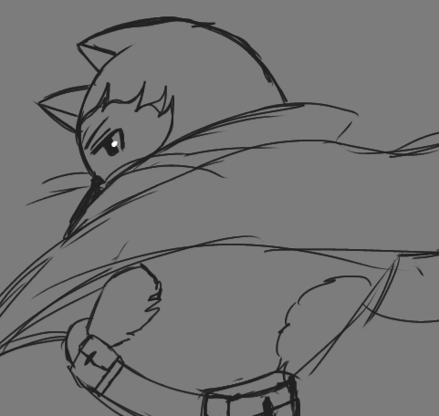
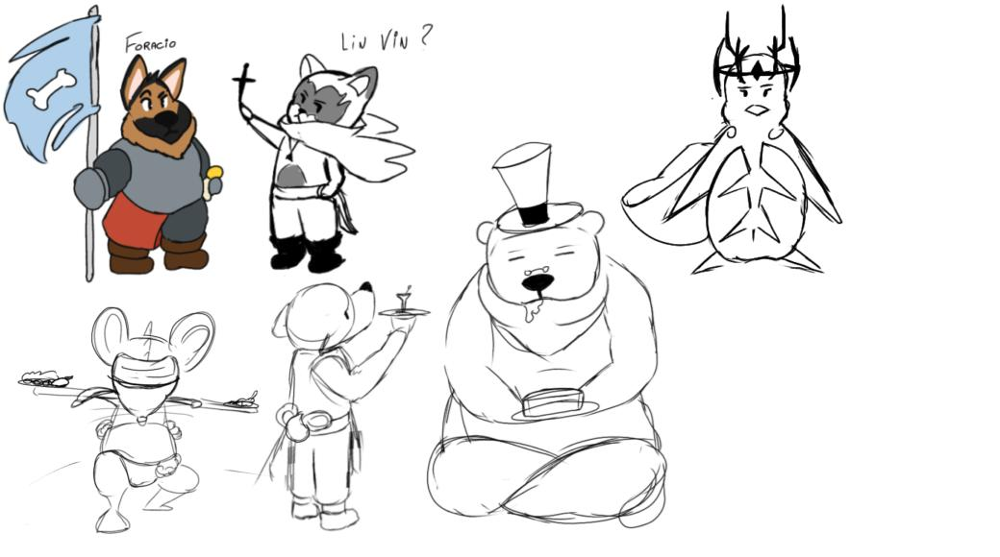

Foracio
Nascido em uma familia de ferreiros da cidade real de Olter, ele sempre praticou com os guerreiros que passavam na forja de seu pai, desde cedo ele é elogiado por sua habilidade nata com espadas.
Trângania, bela e acolhedora. Nas sombras, devastadora e misteriosa Em um momento de sua história, Borealis, cultuado por aqueles que abraçaram as trevas. Da escuridão, apenas uma mera fagulha de força, aqueles que irão melhorar Trângania e aqueles que se perderam.
Nascido em uma familia de ferreiros da cidade real de Olter, ele sempre praticou com os guerreiros que passavam na forja de seu pai, desde cedo ele é elogiado por sua habilidade nata com espadas.

Filho do lider de um clã feiticeiro do reino de Zurich, ele sempre foi criado para ser o futuro líder do clã, mas a magia do Lin acabou sendo consideradas uma das piores, assim ele foi cortado da linha de sucessão do clã e oprimido por seus irmãos.

Criado nas favelas do reino, Robervaldo sempre teve o sonho de melhorar a vida das pessoas em que ele é próximo, desde cedo agia como um lider para as crianças mais novas, ensinando elas a sobreviverem naquele local pútrido.

Descrição da Ursula.

Herdeiro do famoso bar Patamarsa, desde cedo foi criado para ser o melhor barman do planeta, sempre gostou da negocio da família, mas devido a péssima gerencia de seu Pai, o bar acabou tendo seu nome arruinado.

Descrição da Aurora.

Descrição do local e das criaturas encontradas.

Descrição do local e das criaturas encontradas.

Descrição do local e das criaturas encontradas.

Descrição do local e das criaturas encontradas.
PIX: (11) 94002-8922
E-mail: SextetoNaoTaoSinistro@gmail.com